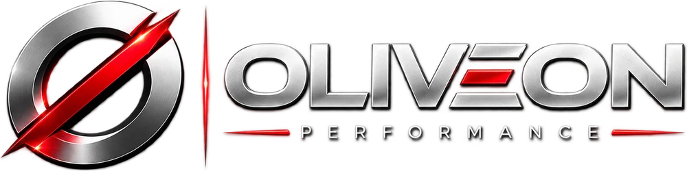

OLIVEON Performance · Estudo de marca · 03.10.2026
Quatro caminhos para a nova marca
Mesma paleta (grafite, prata, branco e o vermelho #E60012), quatro símbolos com ideias diferentes. Cada opção passou por rascunho, arte final e teste de aplicação em papelaria e na parede da recepção. No fim da página, as quatro lado a lado no mesmo teste.
00PesquisaReferências e tendências 2026
01RascunhoSeis estudos por ideia
02Arte final4K, plana, em três cores
03AplicaçãoPapelaria, parede e ícone
04VetorizaçãoSó da escolhida
00 · Ponto de partida
O que muda e o que fica

01
Cromo, chanfro e brilho datam a marca (efeito de 2015), pesam em tela pequena e não imprimem em uma cor só.
02
O "Ø" lê como "conjunto vazio" ou "proibido". É o símbolo de nada, numa marca que vende resultado.
03
O que fica: grafite, prata, branco e o vermelho #E60012, o ângulo de 45° e o "E" de três barras, que já é assinatura.
Marketing de sempreSeta, gráfico, funil e megafone: o padrão que a 04 evita.
05 · Lado a lado
As quatro, no mesmo teste
Embaixo de cada uma, o símbolo em 64, 32 e 16 px, no tamanho real de um ícone de aba. É ali que uma marca prova se aguenta o dia a dia.
Leitura da direção de arte
Nossa recomendação: 04 Turbina
É a que se explica sozinha para quem anuncia: no Brasil, impulsionar é "turbinar", e o símbolo mostra o serviço da agência girando no máximo, com uma forma que nenhuma agência do setor usa. Se a prioridade for uma história de marca mais autoral, a 03 Oliveira, que nasce do próprio nome. Se for não perder o reconhecimento de quem já conhece a OLIVEON, a 01 Lâmina é a transição mais segura. A 02 Redline comunica "performance" na hora, mas é a que mais se aproxima de ícone pronto.
01
Escolha o número da opção (ou diga o que misturar entre elas).
02
Vetorização da escolhida: redesenho em vetor com a tipografia definitiva, com cada curva e espessura acertadas.
03
Entrega: SVG, PDF, EPS e PNG nas versões escura, clara, branca e símbolo, mais o favicon de verdade para o site.